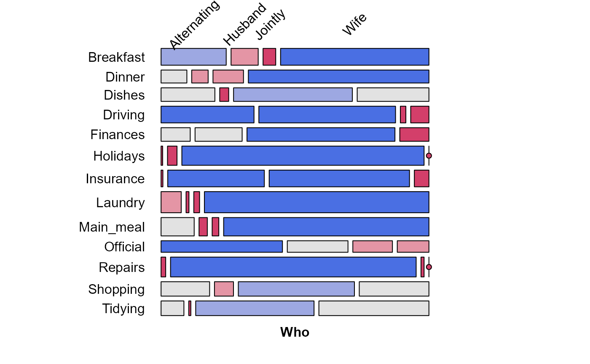

A 13 x 4 table of frequencies of household tasks performed by couples,
either by the Husband, Wife, Alternating or Jointly.
Format
The format is:
'table' int [1:13, 1:4] 36 11 24 51 13 1 1 14 20 46 ...
- attr(*, "dimnames")=List of 2
..$ Task: chr [1:13] "Breakfast" "Dinner" "Dishes" "Driving" ...
..$ Who : chr [1:4] "Alternating" "Husband" "Jointly" "Wife"
Source
This data set was taken from housetasks, a
13 x 4 data.frame. In this table version, the rows and columns were sorted
alphabetically (and a typo was corrected).
Examples
data(HouseTasks)
str(HouseTasks)
#> 'table' int [1:13, 1:4] 36 11 24 51 13 1 1 14 20 46 ...
#> - attr(*, "dimnames")=List of 2
#> ..$ Task: chr [1:13] "Breakfast" "Dinner" "Dishes" "Driving" ...
#> ..$ Who : chr [1:4] "Alternating" "Husband" "Jointly" "Wife"
chisq.test(HouseTasks)
#>
#> Pearson's Chi-squared test
#>
#> data: HouseTasks
#> X-squared = 1944.5, df = 36, p-value < 2.2e-16
#>
# mosaic plot, illustrating some tweaks to handle overlapping labels
require(vcd)
mosaic(HouseTasks, shade = TRUE,
labeling = labeling_border(rot_labels = c(45,0, 0, 0),
offset_label =c(.5,5,0, 0),
varnames = c(FALSE, TRUE),
just_labels=c("center","right"),
tl_varnames = FALSE),
legend = FALSE)

# use seriation package to permute rows & cols using correspondence analysis
if(require(seriation)) {
order <- seriate(HouseTasks, method = "CA")
# the permuted row and column labels
rownames(HouseTasks)[order[[1]]]
colnames(HouseTasks)[order[[2]]]
# do the permutation
HT_perm <- permute(HouseTasks, order, margin=1)
mosaic(HT_perm, shade = TRUE,
labeling = labeling_border(rot_labels = c(45,0, 0, 0),
offset_label =c(.5,5,0, 0),
varnames = c(FALSE, TRUE),
just_labels=c("center","right"),
tl_varnames = FALSE),
legend = FALSE)
}
#> Loading required package: seriation